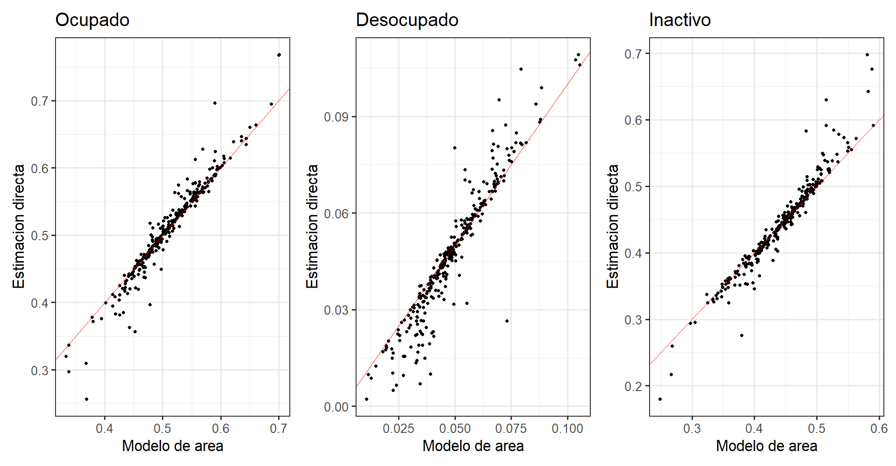
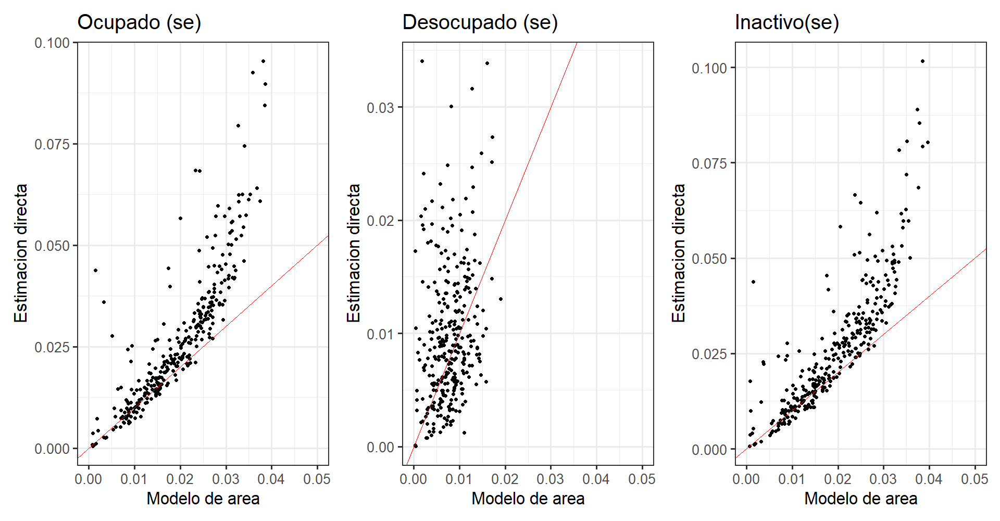
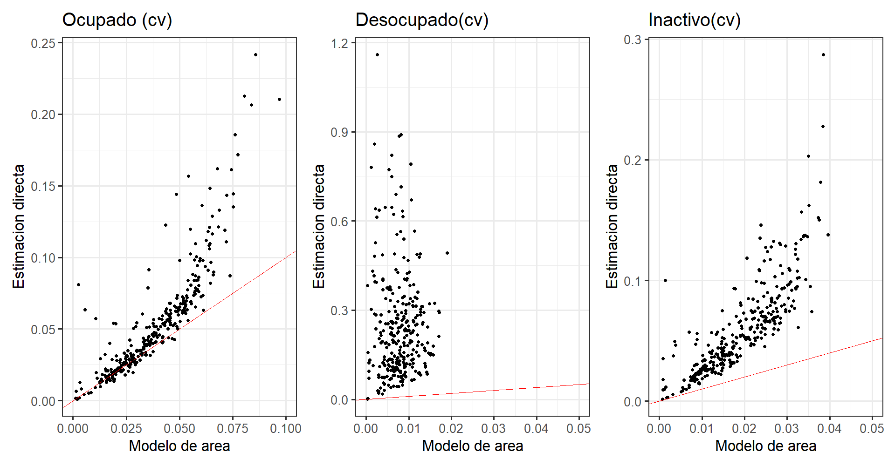
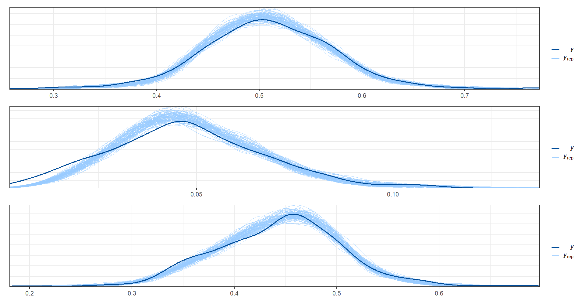

4.6 Gráfica comparativa entre las estimación directa y la estimación resultante del modelo
4.6.1 Estimación puntual
El código genera tres gráficos en un formato de mosaico con p_ocupado, p_Desocupado y p_Inactivo. Cada gráfico muestra la relación entre la variable dependiente de la encuesta original y la variable dependiente estimada por el modelo de área.
Cada gráfico utiliza los datos de estimaciones_obs y utiliza geom_point() para agregar puntos que representan la estimación directa de la variable dependiente (y) versus la estimación por el modelo de área (x). También utiliza geom_abline() para agregar una línea roja con una pendiente de 1 e intercepto de 0, lo que representa una relación perfecta entre la variable dependiente original y la variable dependiente estimada.
Finalmente, cada gráfico utiliza labs para agregar etiquetas de eje y títulos de gráfico. El tema theme_bw() establece el tema en blanco y negro con un tamaño de fuente de 20 puntos. Los tres gráficos se combinan usando el operador | para crear un mosaico.
p_ocupado <- ggplot(data = estimaciones_obs,
aes(y = Ocupado,
x = Ocupado_mod
)) +
geom_point() +
geom_abline(slope = 1, intercept = 0, col = "red") +
labs(x = "Modelo de área",
y = "Estimación directa" ,
title = "Ocupado")+
theme_bw(base_size = 20)
p_Desocupado <- ggplot(data = estimaciones_obs,
aes(y = Desocupado,
x = Desocupado_mod
)) +
geom_point() +
geom_abline(slope = 1, intercept = 0, col = "red") +
labs(x = "Modelo de área",
y = "Estimación directa",
title = "Desocupado")+
theme_bw(base_size = 20)
p_Inactivo <- ggplot(data = estimaciones_obs,
aes(y = Inactivo,
x = Inactivo_mod
)) +
geom_point() +
geom_abline(slope = 1, intercept = 0, col = "red") +
labs(x = "Modelo de área",
y = "Estimación directa" ,
title = "Inactivo")+
theme_bw(base_size = 20)
p_ocupado|p_Desocupado|p_Inactivo
4.6.2 Error estándar.
Crea tres gráficos de dispersión utilizando el paquete ggplot2.
Cada gráfico muestra la relación entre la estimación directa y la estimación del modelo de área para cada una de las tres categorías de ocupación: Ocupado, Desocupado e Inactivo.
Se utiliza la función
geom_point()para agregar los puntos en el gráfico ygeom_abline()para dibujar una línea de referencia en cada gráfico.Se establece la etiqueta de los ejes
xeyy el título de cada gráfico utilizando la funciónlabs().Se ajusta el tema del gráfico utilizando la función
theme_bw().
Finalmente, se combinan los tres gráficos utilizando el operador + y se limita el rango del eje x para cada gráfico utilizando la función xlim().
p_ocupado <- ggplot(data = estimaciones_obs,
aes(y = Ocupado_se,
x = Ocupado_mod_sd
)) +
geom_point() +
geom_abline(slope = 1, intercept = 0, col = "red") +
labs(x = "Modelo de área",
y = "Estimación directa" ,
title = "Ocupado (se)")+
theme_bw(base_size = 20)
p_Desocupado <- ggplot(data = estimaciones_obs,
aes(y = Desocupado_se,
x = Desocupado_mod_sd
)) +
geom_point() +
geom_abline(slope = 1, intercept = 0, col = "red") +
labs(x = "Modelo de área",
y = "Estimación directa",
title = "Desocupado (se)")+
theme_bw(base_size = 20)
p_Inactivo <- ggplot(data = estimaciones_obs,
aes(y = Inactivo_se,
x = Inactivo_mod_sd
)) +
geom_point() +
geom_abline(slope = 1, intercept = 0, col = "red") +
labs(x = "Modelo de área",
y = "Estimación directa" ,
title = "Inactivo(se)")+
theme_bw(base_size = 20)
p_ocupado + xlim(0,0.05)|
p_Desocupado + xlim(0,0.05)|
p_Inactivo + xlim(0,0.05)
4.6.3 Coeficiente de varianción.
Este código utiliza el paquete ggplot2 en R para crear tres gráficas que comparan los coeficientes de variación (cv) estimado con las estimaciones obtenidas mediante modelos de áreas para tres categorías de empleo: ocupados, desocupados e inactivos. Las gráficas muestran la relación entre la estimación directa del y la estimación del modelo de área, donde la línea roja representa una línea diagonal perfecta. Si los puntos están cerca de la línea roja, significa que la estimación del modelo de área es similar a la estimación directa.
p_ocupado <- ggplot(data = estimaciones_obs,
aes(y = Ocupado_se/Ocupado,
x = Ocupado_mod_cv
)) +
geom_point() +
geom_abline(slope = 1, intercept = 0, col = "red") +
labs(x = "Modelo de área",
y = "Estimación directa" ,
title = "Ocupado (cv)")+
theme_bw(base_size = 20)
p_Desocupado <- ggplot(data = estimaciones_obs,
aes(y = Desocupado_se/Desocupado,
x = Desocupado_mod_sd
)) +
geom_point() +
geom_abline(slope = 1, intercept = 0, col = "red") +
labs(x = "Modelo de área",
y = "Estimación directa",
title = "Desocupado(cv)")+
theme_bw(base_size = 20)
p_Inactivo <- ggplot(data = estimaciones_obs,
aes(y = Inactivo_se/Inactivo,
x = Inactivo_mod_sd
)) +
geom_point() +
geom_abline(slope = 1, intercept = 0, col = "red") +
labs(x = "Modelo de área",
y = "Estimación directa" ,
title = "Inactivo(cv)")+
theme_bw(base_size = 20)
p_ocupado + xlim(0,0.1)|
p_Desocupado + xlim(0,0.05)|
p_Inactivo + xlim(0,0.05)
Este código se utiliza para realizar una validación cruzada predictiva (PPC, por sus siglas en inglés) en un modelo estadístico que utiliza el paquete bayesplot. Primero, se establece un esquema de color para los gráficos utilizando la función color_scheme_set() y se configura un tema visual utilizando la función theme_set(). Luego, se extraen las muestras posteriores del parámetro theta del ajuste del modelo utilizando la función fit$draws(). Se seleccionan al azar 100 filas de estas muestras posteriores y se extraen los valores correspondientes a las tres categorías de empleo: Ocupado, Desocupado e Inactivo. Se calcula el PPC para cada categoría de empleo utilizando la función ppc_dens_overlay() y se superponen las densidades estimadas a partir de los datos reales y los valores predichos para visualizar la bondad del ajuste del modelo.
### Gráficos de los ppc
color_scheme_set("brightblue")
theme_set(theme_bw(base_size = 15))
y_pred_B <- fit$draws(variables = "theta",
format = "matrix")
rowsrandom <- sample(nrow(y_pred_B), 100)
theta_1<- grep(pattern = "1]",x = colnames(y_pred_B),value = TRUE)
theta_2<- grep(pattern = "2]",x = colnames(y_pred_B),value = TRUE)
theta_3<- grep(pattern = "3]",x = colnames(y_pred_B),value = TRUE)
y_pred1 <- y_pred_B[rowsrandom,theta_1 ]
y_pred2 <- y_pred_B[rowsrandom,theta_2 ]
y_pred3 <- y_pred_B[rowsrandom,theta_3 ]
ppc_dens_overlay(y = as.numeric(theta_dir$Ocupado), y_pred1)/
ppc_dens_overlay(y = as.numeric(theta_dir$Desocupado), y_pred2)/
ppc_dens_overlay(y = as.numeric(theta_dir$Inactivo), y_pred3)
Por ultimo se guardan los resultados obtenidos.
saveRDS(object = estimaciones_obs, file = out_estimacion)rm( list = ls())
knitr::opts_chunk$set(warning = FALSE,
message = FALSE,
cache = TRUE)
library(kableExtra)
tba <- function(dat, cap = NA){
kable(dat,
format = "html", digits = 4,
caption = cap) %>%
kable_styling(bootstrap_options = "striped", full_width = F)%>%
kable_classic(full_width = F, html_font = "Arial Narrow")
}